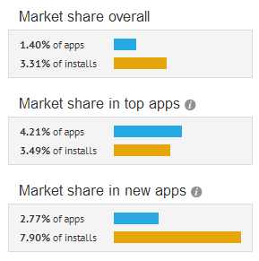
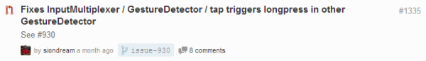

Contribute back to open source projects
Mar 14, 2014 · 4 minute read · CommentsComputingGames development
Developers love Libgdx, it’s an extremely efficient, easy to use, open source, feature rich, cross platform framework. It has a huge community, and a very active repository. What’s not to love? The fact that 1.40% apps on AppBrain use Libgdx backs that up.

Have you thought about contributing back?
Who, me?
Yes and here’s why.
So much win
The beauty of a healthy community driven project such as Libgdx is that decisions are crowd-sourced and code is always peer reviewed. Although this may feel intimidating, don’t let it put you off, take it as the fantastic opportunity to learn that it actually is. The most active developers over there are talented, very talented. That’s the kind of people you want to hang out with, just so eventually, you end up absorbing some of their skills.
Personally, that’s what I do.
Some pull requests contain interesting discussions about software design and programming.
Low barrier of entry
Regardless of your level of expertise, there surely is something you can do. From maintaining the documentation to fixing that annoying old bug or introducing a small feature. All contributions are welcome. Actually, even the tiniest thing will bring you closer to the codebase and lead you to a better of understanding of it.

Everyone makes mistakes, and when that happens, people will politely point it out, giving the contributor a chance to fix it and resubmit. The community is understanding and I haven’t seen any attempts to bring shame to anyone.
This is not a League of Legends game.
Unfortunately, this is not the case for every project. We’re lucky Libgdx is full of love.
This is all lovely but what’s in it for me?
Portfolio, exposure and recognition.
At least, do it for yourself
Even from a purely selfish standpoint, there are pretty strong reasons to get involved with open source projects. Even more so if you’re a student or will be looking for a job in the foreseeable future.
Yes! I want to get into the industry!
Sorry to break the bad news for you, once you finish university you’ll be out in the wild with thousands of other employment hungry graduates. They tend to complain no one will hire them because of their lack of industry experience. See the vicious circle? Luckily enough, that’s nothing more than a bad excuse in the software industry, where the requirements to ‘make it yourself’ are negligible. All it takes is a computer with an Internet connection, which I’m pretty sure you already have.
Working on personal projects that you might eventually open source is fantastic and will make you stand out. However, collaborating on a big project with other people reflects so much better on you. Companies need people to jump into projects and get the hang of it ASAP. That involves being comfortable with gigantic codebases written by people you don’t know or just met and being able to identify as well as fix the problems within it.
A big open source project gives you that education, for free. Companies will appreciate that enormously.
I’m experienced and looking for a job.
No doubt other similarly experienced people are seeking similar positions right now. You will compete against them in the hiring process. What’s going to set you apart? Exactly, going the extra mile, possibly through open source projects, being active in a community, blogging or public speaking. You get the hang of it.
How to
I guess if you’ve read this far, we agree to some degree and you might be interested in getting involved.
Good!
In order to start contributing back to Libgdx, it’s advisable to read the Contributing wiki page. Later on you should do the following.
- Clone the repository
- Check the issues and feature requests section
- Work on it
- Send a pull request
- Rinse and repeat
When in doubt, you can always ask in the forums or discuss in the #libgdx IRC channel at irc.freenode.net.
Happy coding!